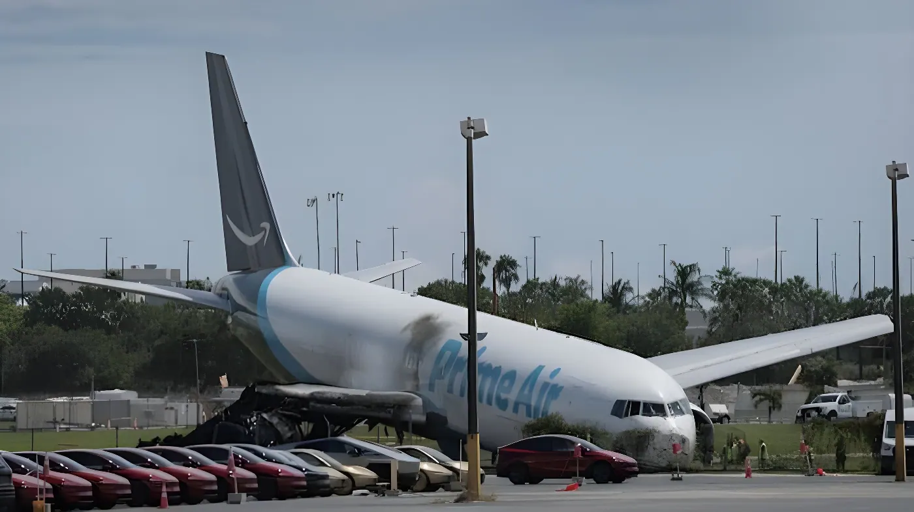

Dimanche 6 septembre 2026, un Boeing 767 cargo affrété pour Amazon Air a fait une sortie de piste à l'atterrissage à l'aéroport international de Miami, percutant un fourgon et un véhicule avant de prendre feu. Le bilan s'élève à cinq morts et cinq blessés, tandis que le National Transportation Safety Board (NTSB) a ouvert une enquête sur les circonstances de l'accident.
L'accident survient vers 13h53 (heure locale), lorsque le vol Amazon Air 7598, un Boeing 767-300 exploité par la compagnie 21 Air LLC pour le compte d'Amazon Prime Air, sort de la piste 30 en provenance de l'aéroport Luis Muñoz Marín de San Juan, à Porto Rico. Selon la présidente du NTSB, Jennifer Homendy, il s'agissait du troisième vol de la journée pour cet appareil, qui avait déjà relié Cincinnati à Miami, puis Miami à San Juan, avant ce dernier trajet retour.
Après avoir quitté la piste, l'avion percute des équipements de navigation, puis un fourgon appartenant à une entreprise de nettoyage, à l'intérieur du périmètre aéroportuaire, et un véhicule utilitaire situé hors de l'enceinte de l'aéroport. L'appareil prend feu et s'immobilise, largement intact, sur le ventre, à proximité d'une route. Plus de 60 unités et environ 200 pompiers de Miami-Dade Fire Rescue sont mobilisés pour éteindre l'incendie.
« Une dévastation totale. »
— Jennifer Homendy, présidente du NTSB, 7 septembre 2026L'appareil effectue son troisième vol de la journée, après des liaisons Cincinnati-Miami puis Miami-San Juan.
Le vol Amazon Air 7598 sort de la piste 30 en atterrissant à l'aéroport de Miami, en provenance de San Juan.
L'avion percute un fourgon de nettoyage et un véhicule, puis prend feu près d'une route.
Les quatre pistes de l'aéroport sont fermées ; un arrêt au sol d'environ trois heures est décrété.
Une équipe du NTSB, forte de 32 personnes, arrive sur place et tient une conférence de presse.
L'aéroport international de Miami n'est pas équipé d'un système EMAS (« Engineered Material Arresting System »), un dispositif conçu pour ralentir et arrêter un avion avant qu'il ne quitte l'extrémité de la piste en cas de sortie de piste. Selon la Federal Aviation Administration, ces systèmes, composés de matériaux légers et écrasables, ont déjà permis d'arrêter en toute sécurité des appareils dans des situations similaires.
| Élément | Détail |
|---|---|
| Appareil | Boeing 767-300, construit en 1994 |
| Trajet | San Juan (Porto Rico) → Miami |
| Équipage | 2 personnes, indemnes |
| Enregistreurs | Boîte noire et enregistreur vocal récupérés |
L'équipe du NTSB déployée sur place doit examiner la formation de l'équipage, les procédures de la compagnie, les échanges avec le contrôle aérien, l'état de l'appareil ainsi que les conditions météorologiques, sans toutefois déterminer de cause probable à ce stade. Jennifer Homendy a précisé que l'agence prévoyait de rester sur les lieux pendant au moins une semaine, le temps de documenter la scène et de recueillir les éléments de preuve périssables.
« Nous ne pouvons prévenir le prochain accident que si nos recommandations sont mises en œuvre. »
— Jennifer Homendy, présidente du NTSB, 7 septembre 2026Les conséquences de l'accident se font sentir bien au-delà de la journée de dimanche : environ 160 vols ont été annulés et plus de 300 retardés le jour même, auxquels s'ajoutent 69 annulations supplémentaires lundi. Deux des quatre pistes de l'aéroport restaient fermées le lendemain de l'accident, avec des répercussions attendues sur plusieurs jours pour les voyageurs.
Au-delà du bilan humain, cet accident rappelle que les sorties de piste restent l'un des incidents aériens les plus fréquents : le NTSB en a recensé plus de 3 000 depuis 2008. L'absence de système d'arrêt d'urgence sur l'une des pistes d'un aéroport aussi fréquenté que Miami, conjuguée à l'âge et à l'historique de l'appareil concerné, alimente déjà les interrogations sur les investissements consacrés à ce type d'équipement dans les grands hubs américains. Mais comme le rappelle la présidente du NTSB elle-même, tirer des conclusions définitives avant la fin de l'enquête serait prématuré : seules les recommandations qui suivront, et leur mise en œuvre effective, permettront de dire si cette tragédie aura changé quelque chose.
On Sunday, September 6, 2026, a Boeing 767 cargo aircraft operating for Amazon Air overran the runway while landing at Miami International Airport, striking a van and a vehicle before catching fire. Five people were killed and five others injured, and the National Transportation Safety Board (NTSB) has opened an investigation into the circumstances of the crash.
The accident occurred around 1:53 p.m. local time, when Amazon Air Flight 7598, a Boeing 767-300 operated by 21 Air LLC on behalf of Amazon Prime Air, overran runway 30 while landing after departing Luis Muñoz Marín International Airport in San Juan, Puerto Rico. According to NTSB Chairwoman Jennifer Homendy, it was the aircraft's third flight of the day, having already flown from Cincinnati to Miami, then from Miami to San Juan, before this final return leg.
After leaving the runway, the plane struck navigational equipment, then a van belonging to a cleaning company inside the airport perimeter, and a vehicle located outside the airport grounds. The aircraft caught fire and came to rest largely intact, on its belly, near a roadway. More than 60 units and roughly 200 Miami-Dade Fire Rescue firefighters were mobilized to put out the blaze.
"Utter devastation."
— Jennifer Homendy, NTSB Chairwoman, September 7, 2026The aircraft flies its third leg of the day, after Cincinnati-Miami and Miami-San Juan flights.
Amazon Air Flight 7598 overruns runway 30 while landing at Miami International Airport, arriving from San Juan.
The plane strikes a cleaning-crew van and a vehicle, then catches fire near a roadway.
All four of the airport's runways are closed; a roughly three-hour ground stop is ordered.
A 32-person NTSB team arrives on site and holds a press conference.
Miami International Airport is not equipped with an EMAS ("Engineered Material Arresting System"), a device designed to slow and stop an aircraft before it exits the end of the runway during an overrun. According to the Federal Aviation Administration, these systems — made of lightweight, crushable materials — have already helped safely stop aircraft in similar situations.
| Element | Detail |
|---|---|
| Aircraft | Boeing 767-300, built in 1994 |
| Route | San Juan (Puerto Rico) → Miami |
| Crew | 2 people, unharmed |
| Recorders | Flight data & cockpit voice recorders recovered |
The NTSB team deployed on site is examining crew training, company procedures, communications with air traffic control, the aircraft's condition and weather conditions, without determining a probable cause at this stage. Jennifer Homendy said the agency expected to remain on the ground for at least a week to document the scene and collect perishable evidence.
"We can only work to prevent the next accident if our recommendations are implemented."
— Jennifer Homendy, NTSB Chairwoman, September 7, 2026The effects of the crash extended well beyond Sunday: around 160 flights were cancelled and more than 300 delayed that day, with 69 further cancellations on Monday. Two of the airport's four runways remained closed the day after the accident, with disruption expected to continue for travelers for several days.
Beyond the human toll, this crash is a reminder that runway excursions remain one of the most common types of aviation incident — the NTSB has investigated more than 3,000 of them since 2008. The absence of an emergency arresting system on a runway at a hub as busy as Miami, combined with the age and ownership history of the aircraft involved, is already fueling questions about how much major US airports invest in this kind of safeguard. But as the NTSB's own chairwoman cautioned, drawing firm conclusions before the investigation concludes would be premature: only the recommendations that follow, and whether they are actually implemented, will show whether this tragedy changes anything.